Part 2
Bearing oil clearance
Standard:
0.032 - 0.062 mm (0.00126 - 0.00244 in.)
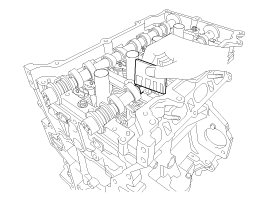
4. Inspect the camshaft end play.
(1) Install the camshaft bearing caps.
(2) Using a dial indicator, measure the end play while moving the camshaft back and forth.
If the end play is greater than specification, replace the camshaft.
If necessary, replace the bearing caps and cylinder head as a set
Camshaft end play
Standard:
0.10 - 0.19mm (0.0039 - 0.0075 in.)
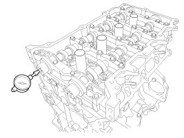
(3) Remove the camshafts.
CVVT (Continuous Variable Valve Timing) Assembly
1. Inspect CVVT assembly.
(1) Fix the camshaft using a vise.
Be careful not to damage the cam lobe and journal.
(2) Check that the CVVT assembly will not turn.
(3) Apply vinyl tape to the retard hole like the one indicated by the arrow in the illustration.
Verify that the tape holds and put air through the port of the camshaft.
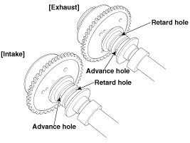
(4) Wind tape around the tip of the air gun and apply air of approx. 150 kPa (1.5 kgf/cm2, 21 psi) to the port of the camshaft.
Perform this in order to release the lock pin for the maximum delay angle locking.
NOTE:
Wrap around it with a shop rag and the likes to prevent oil from splashing.
(5) With air applied, as in step (3), turn the CVVT assembly to the advance angle side (the arrow marked direction in the illustration) with your hand.
Depending on the air pressure, the CVVT assembly will turn to the advance side without applying force by hand. Also, under the condition that the pressure can be hardly applied because of the air leakage from the port, there may be the case that the lock pin could be hardly released.
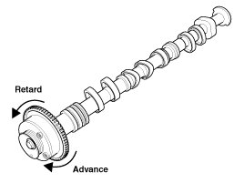
(6) Turn the CVVT assembly back and forth and check the movable range and that there is no disturbance.
Standard:
Should move smoothly in a range from about
25.0° (Intake) / 20.0° (Exhaust)
(7) Turn the intake CVVT assembly with your hand and lock it at the maximum retard angle position (counter clockwise).
(8) Turn the exhaust CVVT assembly with your hand and lock it at the maximum advance angle position (clockwise).
HLA (Hydraulic Lash Adjuster)
With the HLA filled with engine oil, hold A and press B by hand.
If B moves, replace the HLA.
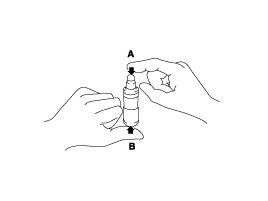
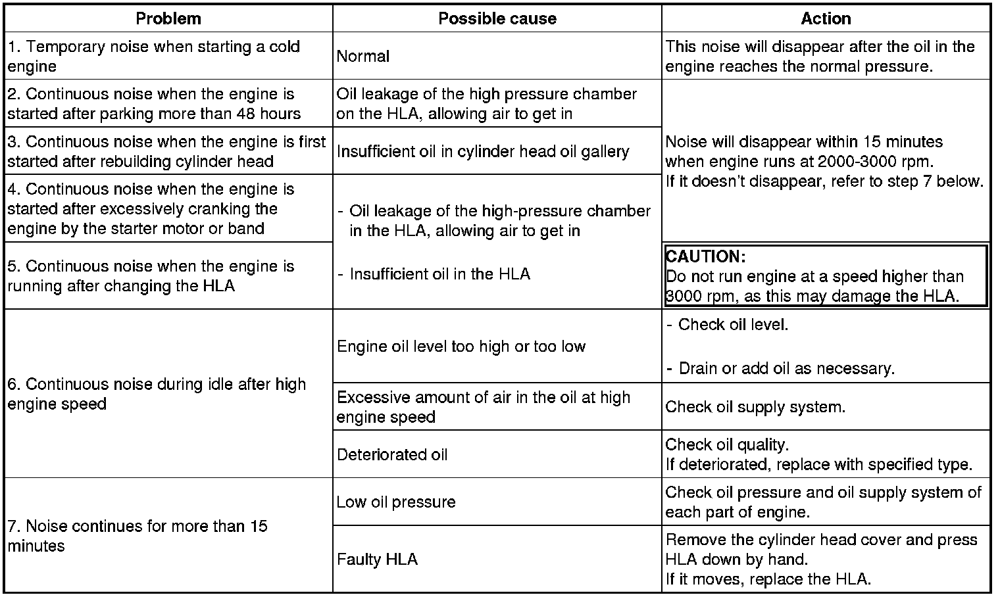
Reassembly
NOTE:
- Thoroughly clean all parts to be assembled.
- Before installing the parts, apply fresh engine oil to all sliding and rotating surface.
- Replace oil seals with new ones.
1. Install the valves.
(1) Using the SST (09222-2E000), push in a new stem seal (A).
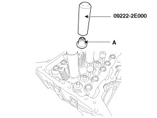
NOTE:
- Do not reuse old valve stem seals.
- Incorrect installation of the seal could result in oil leakage past the valve guides.
(2) Install the valve, valve spring and spring retainer.
NOTE:
Place the valve springs so that the side coated with enamel faces toward the valve spring retainer and then installs the retainer.
(3) Using the SST (09222-3K000, 09222-3K100), compress the spring and install the retainer locks.
Before releasing the valve spring compressor, ensure that the retainer locks are correctly in place after pushing down and releasing the compressor handle 2 - 3 times.
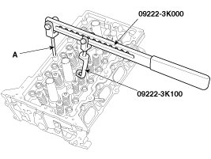
NOTE:
When installing the SST, insert the front support (A) directly into the bolt hole on the cylinder head.
CAUTION:
Do not press valve retainer more than 12 mm (0.47 in.).
Installation
NOTE:
- Thoroughly clean all parts to be assembled.
- Always use new cylinder head and manifold gaskets.
- Always use new cylinder head bolts.
- The cylinder head gasket is a metal gasket. Take care not to bend it.
- Rotate the crankshaft to set the No.1 piston at TDC (Top dead center) on compression stroke.
1. Install the cylinder head gasket (B) on the cylinder block.
(1) Remove hardening sealant, oil, dust, moisture and harmful foreign materials from the cylinder block and the cylinder head.
(2) Apply liquid gasket on the edge of the cylinder block.
(3) Install the cylinder head gasket with the dowel pins of the cylinder block.
(4) Apply liquid gasket on the edge of the cylinder head gasket.
NOTE:
Apply liquid gasket on the edge of the cylinder block and cylinder head gasket.
Sealant:Threebond 1217H or equivalent
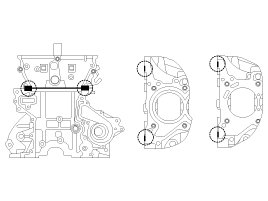
CAUTION:
Assemble the cylinder head gasket and the cylinder head within 5 minutes after applying sealant.
2. Place the cylinder head (A) carefully to protect damage to the head gasket during installation.
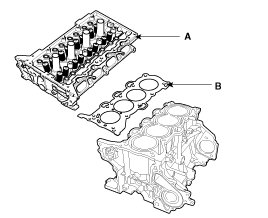
3. Install the cylinder head bolts with washers.
Using SST (09221-4A000), install and tighten the 10 cylinder head bolts, in several passes, in the sequence as shown.
Tightening torque
1st step:
32.4 - 36.3 N.m (3.3 - 3.7 kgf.m, 23.9 - 26.8 lb-ft)
2nd step: 90 - 95°
3rd step: 90 - 95°
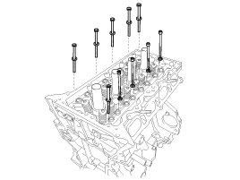
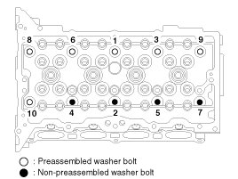
CAUTION:
- Do not reuse the cylinder head bolts.
- Do not apply engine oil on the bolt threads to achieve correct torque.
- Remove the extruded sealant within 5 minutes after installing cylinder head bolts.
- The engine running or pressure test should not be performed within 30 minutes after installing cylinder head bolts.
- Be careful not to change the installing position of the preassembled washer bolts and non-preassembled washer bolts.
- When installing the washer of the non-preassembled washer bolts, the round and chamfer of washers should be faced up.
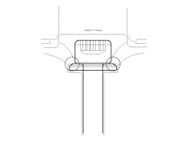
4. Install the spark plugs (A).
Tightening torque:
14.7 - 24.5 N.m (1.5 - 2.5 kgf.m, 10.8 - 18.1 lb-ft)
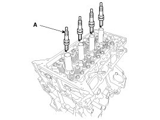
5. Install the rear engine hanger (A).
Tightening torque:
34.3 - 39.2 N.m (3.5 - 4.0 kgf.m, 25.3 - 28.9 lb-ft)
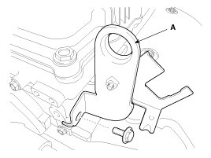
6. Install the exhaust OCV (Oil control valve) (A).
Tightening torque:
9.8 - 11.8 N.m (1.0 - 1.2 kgf.m, 7.2 - 8.7 lb-ft)
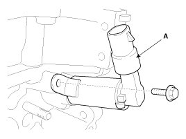
7. Install the intake OCV (Oil control valve) (A).
Tightening torque:
9.8 - 11.8 N.m (1.0 - 1.2 kgf.m, 7.2 - 8.7 lb-ft)
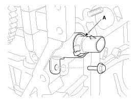
CAUTION:
- Do not reuse the OCV when dropped.
- Keep the OCV filter clean.
- Do not hold the OCV sleeve (A) during servicing.
- When the OCV is installed on the engine, do not move the engine with holding the OCV yoke.
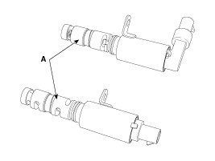
8. Install the oil control adapter (A) with a new gasket (B).
Tightening torque:
9.8 - 11.8 N.m (1.0 - 1.2 kgf.m, 7.2 - 8.7 lb-ft)
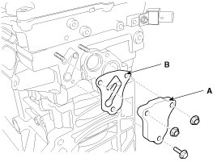
9. Install the water temperature control assembly.
10. Fasten the heater pipe mounting bolts (B).
Tightening torque:
19.6 - 23.5 N.m (2.0 - 2.4 kgf.m, 14.5 - 17.4 lb-ft)
CAUTION:
Do not reuse the seal bolts.
11. Connect the bypass hose (A).
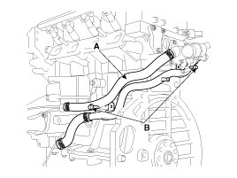
12. Install the HLA (Hydraulic lash adjuster)(A) and the swing arm (B).
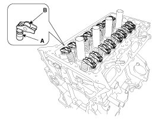
(1) When installing HLA, it should be held upright so that engine oil in HLA may not spill and assured that dust does not adhere to HLA.
(2) HLA should be inserted carefully to the cylinder head not to spill engine oil.
CAUTION:
In case of spilling, air bleed should be done in accordance with the air bleed procedure. Stroke HLA in diesel oil 4 - 5 times by pushing its cap while pushing the ball down slightly with a hard steel wire. (Take care not to severely push a hard steel wire down since ball is several grams.)
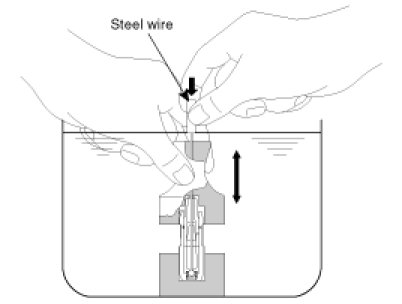
13. Install the cam carrier.
(1) Using a gasket scraper, remove all the old packing material from the gasket surfaces.
(2) The sealant locations on the cam carrier and the cylinder head must be free of harmful foreign materials, oil, dust and moisture. Spray cleaner on the surface and wipe with a clean duster.
(3) After applying liquid sealant on the bottom surface of the cam carrier, assemble the cam carrier. Continuous bead of sealant should be applied to prevent any path from oil leakage.
Bead width:2.5 - 3.5 mm (0.10 - 0.14 in.)
Sealant:Threebond 1217H or equivalent
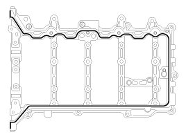
(4) Place the cam carrier (A) on the cylinder head. The dowel pins on the cam carrier and holes on the cylinder head should be used as a reference in order to assemble the cam carrier in exact position.
(5) Fasten the cam carrier bolts.
Tightening torque:
18.6 - 22.6 N.m (1.9 - 2.3 kgf.m, 13.7 - 16.6 lb-ft)
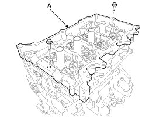
CAUTION:
- Assemble the cam carrier within 5 minutes after applying sealant.
- Assemble the camshaft bearing cap within 5 minutes after assembling the cam carrier.
- The engine running or pressure test should not be performed within 30 minutes after assembling the cam carrier.
14. Install the camshafts.
(1) Place the intake and exhaust camshafts (A) on the cam carrier.
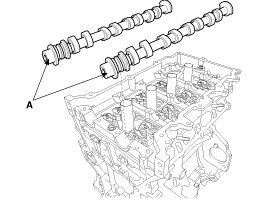
(2) Install the camshaft bearing cap (A).
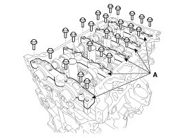
Tighten the bolts, in several passes, in the sequence as shown.
Tightening torque
M6 bolts:
11.8 - 13.7 N.m (1.2 - 1.4 kgf.m, 8.7 - 10.1 lb-ft)
M8 bolts:
18.6 - 22.6 N.m (1.9 - 2.3 kgf.m, 13.7 - 16.6 lb-ft)
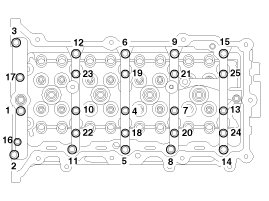
CAUTION:
Be careful not to change the position and direction of bearing caps.
15. Install the intake CVVT assembly (A) and exhaust CVVT assembly (B).
Tightening torque:
64.7 - 76.5 N.m (6.6 - 7.8 kgf.m, 47.7 - 56.4 lb-ft)
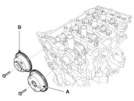
NOTE:
When removing the CVVT assembly bolt, hold the camshaft with a wrench to prevent the camshaft from rotating.
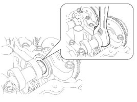
16. Install the PCSV bracket (A).
Tightening torque:
9.8 - 11.8 N.m (1.0 - 1.2 kgf.m, 7.2 - 8.7 lb-ft)
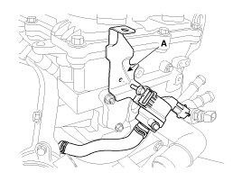
17. Install the condenser (A).
Tightening torque:
9.8 - 11.8 N.m (1.0 - 1.2 kgf.m, 7.2 - 8.7 lb-ft)
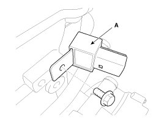
18. Install the vacuum pipe (A).
Tightening torque:
9.8 - 11.8 N.m (1.0 - 1.2 kgf.m, 7.2 - 8.7 lb-ft)
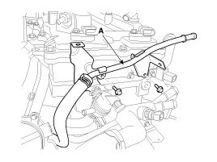
19. Install the timing chain including the drive belt, the cylinder head cover, the alternator and the timing chain cover.
20. Install the intake and exhaust manifold.
21. Install the injector & rail assembly (A).
Tightening torque:
18.6 - 23.5 N.m (1.9 - 2.4 kgf.m, 13.7 - 17.4 lb-ft)
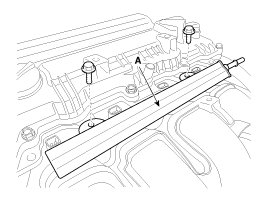
22. Connect the fuel hose (A) and PCSV (Purge control solenoid valve) hose (B).
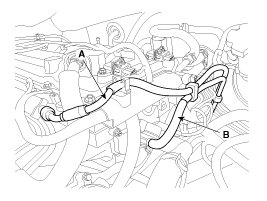
23. Connect the brake booster vacuum hose (A) and the heater hoses (B).
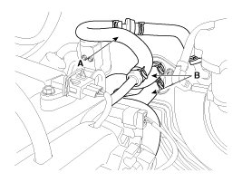
NOTE:
When installing the heater hoses, install as shown in illustrations.
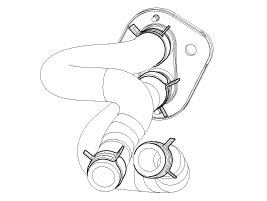
24. Install the wiring and protectors on the cylinder head and the intake manifold and then connect the wiring connectors and harness clamps.
(1) The intake OCV (Oil control valve) connector (A)
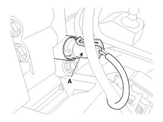
(2) The exhaust OCV (Oil control valve) connector (A)
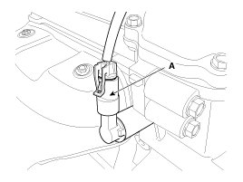
(3) The alternator connector (A)
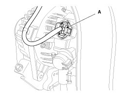
(4) The ignition coil connectors (A)
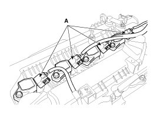
(5) The intake CMPS (Camshaft position sensor) connector (A)
(6) The exhaust CMPS (Camshaft position sensor) connector (B)
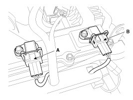
(7) The injector connectors (A)
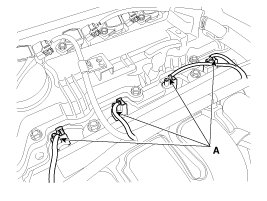
(8) The front and/or rear HO2S (Heated oxygen sensor connectors (A)
[ULEV]
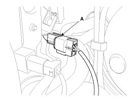
[SULEV]
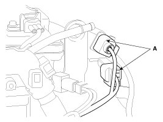
(9) The condenser connector (A)
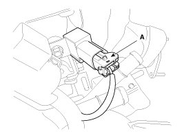
(10) The PCSV (Purge control solenoid valve) connector (A)
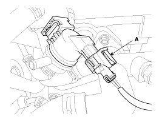
(11) The ECTS (Engine coolant temperature sensor) connector (A)
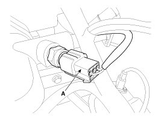
(12) The VIS (Variable Intake System) connector (A)
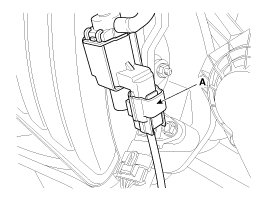
(13) The MAPS (Manifold absolute pressure sensor) & IATS (Intake air temperature sensor) connector (A)
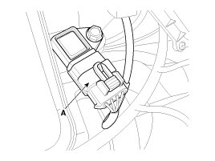
(14) The ETC (Electronic throttle control) connector (A)
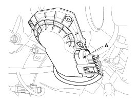
(15) The VCMA (Variable charge motion actuator) connector (A)
25. Connect the radiator upper hose and lower hose.
26. Install the air duct and the air cleaner assembly.
27. Install the engine cover.
28. Install the RH under cover.
29. Install the RH front wheel.
30. Connect the battery negative terminal.
31. Add all the necessary fluids and check for leaks.
Connect GDS. Check for codes, note, and clear. Recheck.
NOTE:
- Refill engine with engine oil.
- Refill a radiator and a reservoir tank with engine coolant.
- Clean battery posts and cable terminals and assemble.
- Inspect for fuel leakage.
- After assembling the fuel line, turn on the ignition switch (do not operate the starter) so that the fuel pump runs for approximately two seconds and fuel line pressurizes.
- Repeat this operation two or three times, then check for fuel leakage at any point in the fuel line.
- Bleed air from the cooling system.
- Start engine and let it run until it warms up (until the radiator fan operates 3 or 4 times).
- Turn off the engine. Check the level in the radiator, add coolant if needed. This will allow trapped air to be removed from the cooling system.
- Put radiator cap on tightly, then run the engine again and check for leaks.